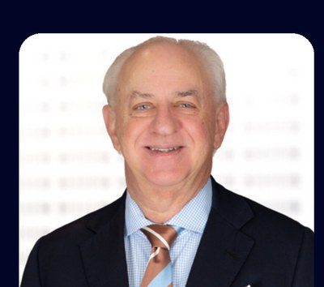
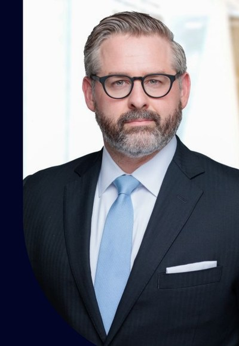
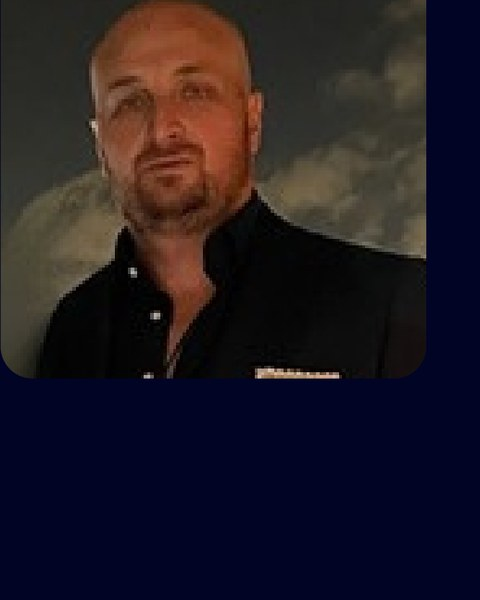

The U.S. federal government spends $681B annually in contracts — with AI/ML the fastest-growing category at 40%+ YoY growth — and the White House AI Action Plan's 90+ directives are designed to accelerate that further. Applications are now open for American AI's Q3 2026 engagement cycle. The deadline to apply is July 21st, 2026 at 9:00 PM PT. American AI will respond to all on-time applicants by August 1st, 2026.
Positioned to Win. A Federal Engagement Firm for the AI Era.
The United States is in a race to achieve global dominance in artificial intelligence. The Administration has made the stakes explicit, the directive clear, and the policy architecture concrete. What remains is execution — and execution in the federal market requires more than a capable product.
Federal procurement is a structured system with specific intelligence requirements, relationship dependencies, and procurement timelines that operate independently of commercial market logic. Companies that enter without that infrastructure spend months — sometimes years — learning what qualified operators already know. The requirement was shaped before they arrived. The decision-maker had never heard their name. The window had already closed.
American AI was built to eliminate that disadvantage.
AI
Action Plan
The United States is in a race to achieve global dominance in artificial intelligence. Whoever has the largest AI ecosystem will set the global standards and reap broad economic and security benefits. Under President Trump, our Nation will win, ushering in a new Golden Age of innovation, human flourishing, and technological achievement for the American people. America's AI Action Plan has three policy pillars – Accelerating Innovation, Building AI Infrastructure, and Leading International Diplomacy and Security.
America's AI Action Plan — authored by Michael Kratsios, David Sacks, and Marco Rubio, signed by the President in July 2025 — opens with a declaration that frames the moment precisely: the United States is in a race to achieve global dominance in artificial intelligence. Whoever has the largest AI ecosystem will set global standards and reap broad economic and national security benefits. The Plan calls for accelerating AI adoption across every Federal agency, building infrastructure at national scale, and establishing American AI as the global standard. These are not aspirations. They are policy directives with near-term execution timelines.
The federal government is now under mandate to procure AI-capable solutions at scale. That mandate creates a defined procurement window — and the companies that are positioned inside that window, with the intelligence infrastructure, government affairs relationships, and principal-level access already in place, are the ones that capture it. American AI exists to deliver that positioning to qualified companies operating at the frontier.
The American AI Engagement
American AI positions qualified AI-capable companies to compete and win in the $793B federal marketplace — at the precise moment America's AI Action Plan directs every Federal agency to accelerate AI adoption as a national security imperative. The question is not whether the federal market will move. It is which companies are inside it when it does.
Engagements begin with an application. Any qualified company may apply and receive a direct decision — no prior introduction required. If there is not a fit, we will say so clearly and explain why.
Clients define their target agencies and contract objectives at the outset. The Foundation engagement is structured for delivery in 60–90 days.
American AI operates as a single, integrated engagement — Sunstone Advisory Group for AI-powered federal market intelligence, Steptoe LLP for government affairs and requirement shaping, and Life Force Global Alliance for access at the highest levels of American business, government, and national security. Three distinct capabilities. One coordinated effort.
Clients receive private, curated 1-on-1 introductions through Life Force Global Alliance — selected specifically for their industry, objectives, and active pursuit. Introductions are recalibrated as the engagement evolves.
American AI works with a select number of clients per quarter. The Foundation Build is the entry point — not the ceiling. Clients may continue on a month-to-month basis following the Foundation, with ongoing intelligence updates, dedicated office hours, Steptoe relationship maintenance, and quarterly engagement reviews for the life of their federal pursuit.
The Foundation Build
The Foundation Build delivers the market intelligence infrastructure, government affairs activation, and principal-level network access that most companies spend years and significant capital attempting to assemble independently. Clients enter the federal procurement conversation with the tools, relationships, and positioning clarity already in place — structured for execution within 60–90 days.
The Three-Part Ecosystem
Sunstone Advisory Group — Intelligence
Federal market data is incomplete, inaccurate, and unreliable in most dimensions. Contract records are miscoded. Spending data is fragmented across dozens of systems. Agency buying patterns are obscured by idiosyncratic procurement vehicles.
Sunstone Advisory Group applies the CCCALS method — Critical, Comprehensive, Contextual, Analytical, Logical, Skeptical — to build federal market intelligence that is precise, interrogated, and actionable. Every data point is cross-referenced against procurement history, congressional appropriations, agency forecasts, and pipeline signals. The output is delivered through AI-powered intelligence dashboards, structured specifically around your target agencies and contract objectives. The result is clarity where others have noise — and targeting precision where others are guessing.
Steptoe LLP — Government Affairs
At the most competitive level of federal procurement, outcomes are not determined by the quality of the proposal. They are determined by who shaped the requirement, who has an established relationship with the decision-maker, and who understood the political and budgetary landscape before the solicitation was written. Requirement shaping — the ability to influence what the government decides to buy and how it is scoped — is the highest-leverage activity in federal business development. It requires access that cannot be assembled after the fact.
Steptoe LLP is a preeminent international law firm founded in 1945, with more than 500 attorneys across Washington D.C., New York, London, and Brussels. Their Government Affairs, Public Policy, and Government Contracts practices operate at the highest levels of the federal system.
American AI's principal relationship at Steptoe is a Partner in Government Contracts, Government Affairs, and Congressional Oversight — a former Deputy Assistant to the President and Acting White House Cabinet Secretary, former Deputy Assistant Secretary of Defense for Counternarcotics and Global Threats, and Policy Advisor on the Trump-Vance Presidential Transition Team, appointed to the Homeland Security Advisory Council by President Trump and Secretary Noem. The value to this engagement is direct access to the agency officials, senior congressional staff, and decision-makers who determine procurement outcomes.
Life Force Global Alliance — Access
The federal market is shaped by relationships that predate any procurement action. Agency priorities are influenced by conversations that take place well outside the formal contracting process — among senior officials, industry leaders, investors, and advisors who operate at the intersection of policy, capital, and national security. Access to those conversations is not available through standard business development channels.
During the initial 90-day engagement, Matt Argall personally curates and schedules private 1-on-1 introductions between the client and members of Life Force Global Alliance — selected specifically for your industry, objectives, and active pursuit. These are private, scheduled meetings with former Cabinet officials, agency directors, senior investment bankers, political strategists, and global investors — each selected because of their direct relevance to your federal objectives.
The relationships established during the Foundation engagement are lasting assets. They compound in value as the engagement progresses and the client's federal presence matures.
The Engagement Arc
The federal government concentrates over 23% of its annual contract spend in a single month — the fiscal year-end in September. FY2025 set a record: $85.5 billion in new contract awards executed in that month alone. FY2026 is tracking toward the all-time high of $90.1 billion set in FY2022.
Awards do not flow to the best proposal. They flow to vendors who are already known, already vetted, and already positioned inside the procurement conversation. Positioning is built in advance — through intelligence, relationship development, and requirement shaping that occurs months before any solicitation is released. The engagement is designed to be entered at any time and compounds in value as the client's federal presence matures.
Phase 1 — Foundation Build. Sunstone establishes the intelligence baseline, SAM.gov profile, capabilities documentation, and engagement roadmap. Infrastructure is activated.
Phase 2 — Active Intelligence. Intelligence dashboards delivered. Targeted business development outreach launched. Steptoe onboarding initiated. Life Force Global Alliance introductions commence.
Phase 3 — Requirement Shaping. Steptoe is engaged with agency decision-makers, carrying Sunstone intelligence as the brief. Requirement shaping underway.
Phase 4 — Capture. Proposal readiness assessed and confirmed. Political and procurement intelligence feeding capture strategy in real time.
Phase 5 — Response. Proposal responses developed, reviewed, and refined. Steptoe maintains agency relationships through the quiet period.
Phase 6 — Award. Contracts flow to companies that are known, vetted, and positioned. That positioning was built here.
The engagement is not tied to a procurement calendar. A company that enters at any point begins building the intelligence infrastructure and relationships that determine outcomes. The earlier the entry, the greater the compounding advantage — but the window does not close on a fixed date.
Frequently Asked Questions
American AI engages companies that have a credible AI product or service, demonstrated commercial traction, and the operational capacity to deliver on a federal contract. We consider companies at varying stages of revenue — growth trajectory and market positioning carry more weight than existing federal revenue. The Foundation Build exists precisely to close the gap between commercial readiness and federal positioning. If your company has built something the government will want to buy, that is the relevant threshold.
No. The application is the right first step regardless of timing certainty. If your company is selected for a direct conversation, that assessment clarifies positioning and readiness in ways that are useful independently of next steps. Companies that engage earlier build infrastructure and relationships that compound across procurement cycles — an advantage not available to those that wait.
Applications are reviewed by Eli Morin personally. Companies that meet the threshold for a direct conversation will be contacted to schedule a private call — this is not automatic, and not all applicants will advance to this stage. For those that do, the call is a direct, substantive assessment: your target agency alignment, set-aside eligibility, positioning gaps, and what a realistic engagement path looks like. If there is not a fit, we will say so clearly. We do not extend conversations that are not in a company's interest.
Yes. The federal government writes significant contracts across a broad range of sectors — technology, defense, energy, space, ocean and maritime, frontier technologies, biotechnology, healthcare, construction, logistics, professional services, financial products, and telecommunications. The CCCALS intelligence methodology applies wherever the government spends at scale. Life Force Global Alliance spans every domain where senior federal procurement decisions are made. If your company operates at the frontier of any field the government is actively investing in, the engagement is relevant.
It provides access to conversations that would otherwise take years to develop and are not available through standard channels. A private meeting with a former CDC Director changes how your company is understood in federal health procurement. A session with a former White House Cabinet Secretary provides political and budgetary context that no database can supply. A conversation with a senior investment banker clarifies how your company is perceived in the capital markets that surround major government programs. Each introduction is curated by Matt Argall to your specific situation, objectives, and active pursuit. These are not events. They are strategic assets.
The two components are designed to work together. The intelligence and assets produced in the Foundation Build are the brief that Steptoe carries into agency meetings — the specific data, positioning analysis, and capability documentation that gives their government affairs team something substantive to work with. The architecture of the engagement reflects how federal procurement actually works: intelligence informs relationships, and relationships inform outcomes.
Clients do. You specify your target agencies, contract vehicles, set-aside eligibility, and growth objectives. We build the engagement infrastructure around your goals and provide feedback on what is realistic given timing and the AI procurement landscape. Think of your stated objectives as the bar: the more ambitious the target, the more precise the work required.
The Foundation Build is the entry point — not the ceiling. After the Foundation, clients may continue on a month-to-month basis. Ongoing support includes intelligence dashboard updates, dedicated office hours, Steptoe relationship maintenance, Life Force Global Alliance introductions, and quarterly engagement reviews. The infrastructure stays active for as long as you are pursuing the federal market.
Email eli@americanai.capital directly, or reach Eli Morin on Signal or WhatsApp at +1 (626) 817-3440. Every inquiry is reviewed personally by Eli Morin.
Life Force Global Alliance
Private 1-on-1 meetings with individuals who operate at the highest levels of American business and government — curated specifically to your goals.
Christian F. BergerManaging Director, Private Equity — McGuireWoods
Managing Director within McGuireWoods' Private Equity, M&A, and Debt Finance practice. Business development at the intersection of private equity and capital markets. Recognized as Legal Sales & Service Executive of the Year, 2019.
Robert RedfieldFormer Director, U.S. Centers for Disease Control and Prevention
Former Director of the CDC (2018–2021) and Administrator of the Agency for Toxic Substances and Disease Registry. Virologist with 30+ years in infectious disease research. Co-founded the University of Maryland's Institute of Human Virology.
Steven MarderManaging Director, TMT Investment Banking — BTIG
25+ years in Technology, Media, and Telecommunications investment banking. Managing Director at BTIG guiding TMT deal-making. Board roles at WideOpenWest (NYSE: WOW) and InvestorPlace Media. J.D., St. John's University; B.A., Columbia University.
Robert WasingerCo-Founder & Partner, The Ragnar Group
30+ years of political and strategic experience. Former Chief of Staff to U.S. Senator Sam Brownback. Senior member of Trump's 2016 presidential campaign and Director of Senate and Gubernatorial Outreach.

Governor James HodgesPresident & CEO, McGuireWoods Consulting
Former Governor of South Carolina. President & CEO of McGuireWoods Consulting; advises on public policy and business strategy nationwide. National co-chair for Obama's 2008 campaign. Named "Lawyer of the Year" for Government Relations.
Evan "Thor" TorrensEmmy Award-Winning Media Strategist & Former SAPO
Emmy Award-winning media expert and former Special Assistant to President Donald Trump. Known for crafting influential narratives at the highest levels of politics. Advises leaders, corporations, and startups on strategic communications and public perception.
Shahal M. KhanExecutive Chairman & CEO, BurTech (NASDAQ)
Strategic investor with 30+ years spanning telecom, real estate, energy, and technology. Has syndicated over $25B in equity financing. U.S. Council on Competitiveness Commissioner. Namesake of the Shahal M. Khan Institute for Cybersecurity at American University.
Brock PierceCo-Founder, Tether · Blockchain Capital · Block.one
Pioneer and early architect of the digital currency ecosystem. Co-founder of Tether, Blockchain Capital, Mastercoin (the first ICO), and Block.one. Bitcoin Foundation Chairman. Has raised over $5B for companies he's founded.

Matthew J. FlynnPartner — Steptoe LLP
Former Deputy Assistant to the President and Acting White House Cabinet Secretary. Former Deputy Assistant Secretary of Defense for Counternarcotics. Trump-Vance Transition Team policy advisor. Appointed to the Homeland Security Advisory Council by President Trump and Secretary Noem.
Andrey LazorenkoCEO, ADI Foundation
CEO of ADI Foundation, founded by Sirius International — the digital arm of IHC ($240B+ UAE holding company). Building enterprise-grade blockchain infrastructure to position the UAE at the forefront of digital systems. Former CEO and Co-Founder of IdeaSoft, with 250+ Web3 and fintech projects delivered worldwide.
Prince Anthony Bart-AppiahPresident, BridgeZone Global
Cross-continental investment facilitator building partnerships across Africa, the Americas, and the Caribbean. Descendant of the Akwamu Royal Heritage of Ghana. Board member of the Ghana Tourism Authority and chair of its Marketing Sub-Committee. Trusted connector for organizations expanding into African markets.
Co-Founder and Managing Director of Mercato Partners. Previously co-founded vSpring Capital and founded Junto Partners to mentor entrepreneurs. Recognized leader in Utah's startup ecosystem. Holds a B.S., M.B.A., and Ph.D. in Entrepreneurship and Venture Finance.
Jason A. SugarmanSports Financing & Infrastructure Investor
Finance leader specializing in sports financing, asset-based lending, private equity, and infrastructure. Investor in Los Angeles Football Club (LAFC), the Oklahoma City Dodgers, and championship esports team Team Liquid. Son of Peter Guber; helps manage the family estate.
Peter John AlexanderChief Business Officer, MeetKai
Chief Business Officer at MeetKai driving global growth, business development, and operations. Former Global Director of Partnerships for the LA Chargers, with prior experience inside the Federal Government and in early-stage venture investment and investment banking. Pioneer in immersive AI experiences.
Robert RotunnoFinancial Executive, Spartan Capital Securities
Financial professional with 20+ years in the securities industry. Currently with Spartan Capital Securities, LLC, with prior leadership and advisory roles at multiple firms. Licensed in over 20 U.S. states and territories. Experience spans capital markets, structured products, and long-term portfolio planning.
Robert P. Hamblet Jr.CTO, Wire-Labs · Telecom & Infrastructure
Veteran of five generations of mobile technology — 4G, 5G, and emerging 6G. Senior engineering and architecture roles at Intel Smart-Edge, AT&T Mobility Labs, Globe Touch, and Teal Communications. Pioneer in MEC, private LTE/CBRS, and secure IP exchange systems. CTO of Wire-Labs.

Chris ReinholdFounder & Industry Leader, iMarket
25-year marketing veteran and pioneer in the CBD and hemp industry. Founder of Medterra, Five, and Venus — among the largest online CBD companies in the world, generating eight-figure revenues. Recognized as one of the top media buyers in the category, known for disruptive product development and brand scaling.
Kat KhosrowyarAssociate Director, American Chemistry Council
Associate Director for Regulatory and Scientific Affairs at the American Chemistry Council, leading efforts to protect the chemical industry from drone, AI, and cyber risks. Former Trade Advisor Attaché for Luxembourg in the Middle East. Co-led Operation Soccer Ball, evacuating Afghan girls' national soccer team to safety. Featured on 60 Minutes, WSJ, and TEDx.
Rick FerreiraHealthcare Entrepreneur
Healthcare leader and entrepreneur focused on reducing healthcare delivery costs through novel technology, service, supply chain, and product design solutions. Has launched, scaled, and sold multiple businesses challenging the established inequities between provider, patient, and supplier.
U.S. Navy veteran, investment banker, and supply chain strategist. Founder of Maritime Protective Services. As Head of Commercial for CCG Trading, led the company's Defense Production Act engagement during COVID-19, securing federal investment to expand domestic nitrile glove production. Advises on national security manufacturing and public-private partnerships.
Hope SullivanPresident & CEO, Leon H. Sullivan Foundation
DC-based attorney and global advocate for sustainable investment. Has helped secure over $300B in grants and sovereign debt relief through strategic partnerships. President & CEO of the Leon H. Sullivan Foundation, organizing the Sullivan Summits and leading anti-corruption and poverty alleviation efforts across Africa.
Jimmy MillironCo-Founder & President, National Brokerage Atlantic
Co-Founder and President of National Brokerage Atlantic, advising U.S. and international clientele on Wealth Enhancement, Estate Planning, and Asset Protection. Insurance veteran with multi-channel distribution expertise across family offices, law firms, and accounting firms. Built NexTier Bank's collateralized premium finance lending program to a $400MM+ portfolio.
Gurjot BatraPresident, Trinity Printing Machinery
President of Trinity Printing Machinery, a trusted name in the global printing industry. Bridges international markets through a wide network of partners across the U.S. and India. Active in business ventures spanning entertainment, media, and cross-border opportunities. Based in Tampa, Florida.
The Team
Eli Morin
Principal
Eli is a Founding Member of Otter.ai — the AI Notetaker that has processed over 1 billion meetings for 35+ million users worldwide. With more than a decade building venture-backed AI platforms — some later integrated into Google, Amazon, Snap, and Alibaba — he applies that pattern recognition to the federal market at American AI.
Matt builds empires around ideas ahead of their time. His ventures span finance, blockchain, AI, semiconductors, telecommunications, and government procurement — including driving over $8B in student loan consolidations and scaling Digital Mavericks to 30MM daily fan interactions. He built Life Force Global Alliance relationship by relationship and personally curates every introduction American AI delivers.
Zack has 15+ years in the federal marketplace, with capture and go-to-market teams under his lead generating over $2B in contract awards. He has consulted with 20,000+ federal contractors and guided 100+ firms to their first federal contract. He leads every client engagement from selection through active pursuit — and answers his own phone.
American AI works with a focused number of companies each quarter. Engagements are selective by design — if you believe your company belongs in this conversation, we are open to hearing from you.